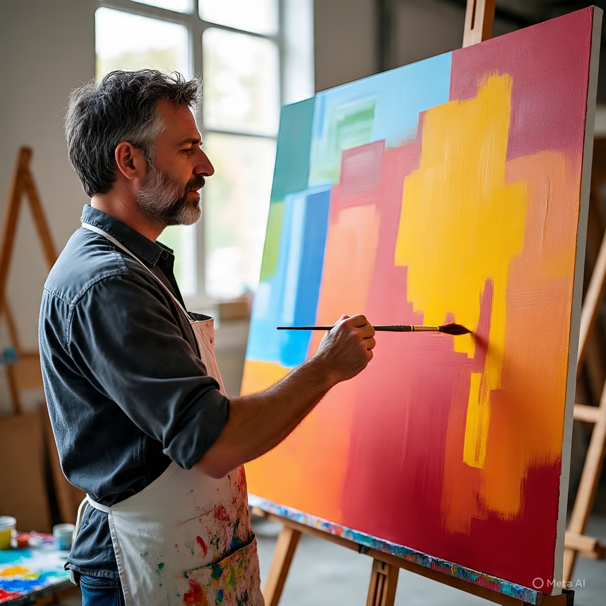

PAINTING
Meaning of Painting
Painting is the art of applying colours to a surface in order to create pictures or decorative designs. It is a form of visual expression that allows individuals to communicate their thoughts, feelings, and ideas through the use of colours, shapes, and forms.

Painting can be used for storytelling, decoration, emotional expression, or to preserve memories and events.
Types of Painting
- Still Life Painting: This is painting things that don’t move, like a basket of fruit, a flower in a vase, or books stacked on a table. It helps you learn shape, shadow, and arrangement.
- Nature Painting: This is painting things from nature like flowers, birds, animals, trees, or butterflies. It teaches you to notice beauty in the world around you.
- Landscape Painting: This means painting wide views of outdoor places — like hills, rivers, farms, or sunsets. You learn to show distance and perspective.
- Imaginable (Imaginative) Painting: This is when you paint things from your mind that may not exist in real life — like flying cars, magical forests, or talking animals. It helps your creativity grow.
- Figure Painting: This means painting human bodies or people doing something — standing, walking, dancing, etc. You learn how to use colour (tint, tone, hue) to show their shape and movement.
- Portrait Painting: This is painting a person's face or full body, like a king, a friend, or yourself. It's about showing what someone looks like.
- Abstract Painting: This type doesn’t show real people or things. Instead, it uses colours, shapes, and lines to show feelings — like anger, joy, or confusion.
- Historical Painting: These are paintings that show important past events, like Nigeria's independence or ancient battles. It helps us remember our history.
- Religious Painting: These show gods, angels, churches, mosques, or holy scenes. They are often found in places of worship.
- Mural Painting: This is painting done directly on big walls or ceilings, like you may see in public places or schools. It’s large and usually tells a story or sends a message.
- Fantasy Painting: This is similar to imaginative painting but focuses more on magical or storybook scenes — dragons, superheroes, or castles in the sky.
- Modern/Contemporary Painting: These are new painting styles with bold ideas and sometimes strange shapes. Examples include graffiti or digital art.
Surfaces You Can Paint On
You can paint on many things — not just paper. Some common surfaces include:
Paper, cardboard, wood, canvas, walls, stones, cloth, glass, and even plastic.
Painting Materials and Tools
- Paint (poster, watercolour, oil, acrylic): These are the colours we use to paint.
- Brushes: We use different types of brushes to spread the paint — flat ones for large areas, round ones for details.
- Palette: This is a flat tray where we mix different colours before using them.
- Canvas or paper: The surface where we do our painting.
- Pencil and eraser: Used to sketch or draw before we start painting.
- Rag or cloth: Used to clean brushes or fix mistakes.
- Water container: Holds water to clean brushes (or mix with paint if using watercolours).
- Easel: A wooden stand that holds your painting so you can work comfortably.
🌈 Colour Theory – Understanding Colours
- Primary Colours (Red, Blue, Yellow): These are the “main” colours. You can’t mix any colours to get them.
- Secondary Colours (Orange, Green, Purple): You get these by mixing two primary colours.
- Tertiary Colours: When you mix a primary and a secondary colour together, you get colours like yellow-orange, red-purple, etc.
- Warm Colours (Red, Orange, Yellow): These colours feel like heat, energy, or sunlight.
- Cool Colours (Blue, Green, Purple): These colours feel calm, peaceful, or like water and sky.
- Neutral Colours (Black, White, Grey, Brown): These are not on the colour wheel, but they are useful for shading, mixing, or softening other colours.
Simple Painting Techniques (How We Use Paint)
- Washing: Painting in light, watery layers — like a soft background.
- Blending: Mixing two colours together smoothly so you don’t see any line between them.
- Dry Brush: Using a brush with almost no paint to make scratchy or rough textures.
- Stippling: Making pictures or shading by using tiny dots.
- Dabbing: Tapping the brush on the surface to create spots or texture.
- Scumbling: Brushing a light colour gently over another to make it look misty or soft.
- Impasto: Putting paint on the surface very thickly so it stands out and you can feel it.
Why Painting Is Important
- It helps you express yourself: You can show what you feel or think without using words.
- It tells stories or records history: Painting can show what happened long ago.
- It beautifies your environment: Paintings make homes, schools, and public places look attractive.
- It teaches observation and patience: You learn to notice small details and take your time.
- It encourages creativity and imagination: It helps your brain grow in new ways.
- It can lead to a career: You can become a painter, illustrator, graphic designer, fashion artist, or teacher.
- It relaxes the mind: Painting helps people feel calm and happy.